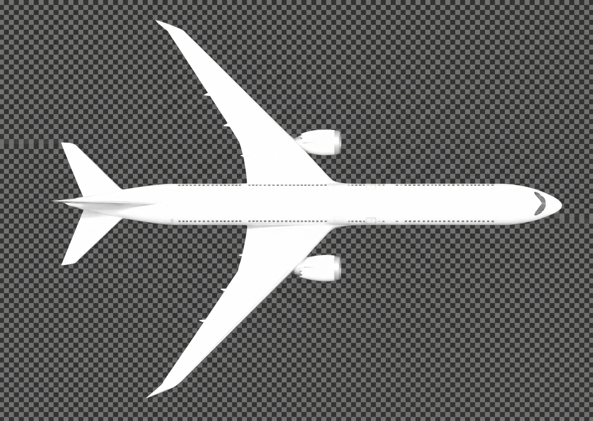

Sky Flight Gallery

Tokyo Tower, Japan Air 123, established on ILS runway 16R... JA123, Tokyo Tower, cleared to land runway
16R, wind 160 at 10 knots...
All Nippon 456, taxi to holding point C1 runway 16L... Skymark 789, contact Departure on 120.8, good
day...
Tokyo Ground, Peach 246 requesting taxi to gate 52...
▼